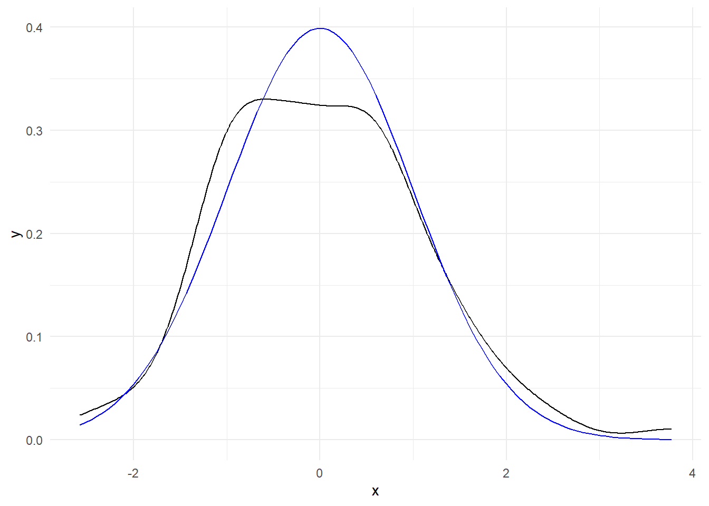

2.1 Non Standard Evaluation - Programming with ggplot2
2.1.1 Problem with programming color inside
aes uses tidy-evaluation
librarian::shelf(ggplot2, ragg, quiet =TRUE)# Sample datadf <-data.frame(a =seq(0, 100, by =10),b =seq(100, 200, by =10))# Your base plotbase_plot <-ggplot(data.frame(x =rnorm(100)), aes(x)) +geom_density() +theme_minimal()# Create the plotplot <- base_plot +geom_function(fun = dnorm,show.legend =TRUE,aes(color ="ATK"),colour ="blue") +scale_colour_manual(name ="Legend", values =c("Line"="red"))# Display the plotprint(plot)

Why is the plot not displaying the legend with a red color ?
ChatGPT: The issue you’re encountering with the legend not displaying the color red and the legend being removed when you include the colour = “blue” argument in the geom_function is related to how aesthetics are mapped in ggplot2. When you use aes(color = “line”), you are mapping the color aesthetic to a constant string “line”, which means that all the points or lines will have the same color, and that color will be determined by the color scale associated with the “line” category. However, when you include colour = “blue” within the geom_function, you are effectively overriding the color aesthetic that you set with aes(color = “line”). This means that all elements drawn by this specific geom_function will be colored in blue, and ggplot2 will not create a legend because there’s no mapping of aesthetics that varies. If you want to specify a different color for this specific geom_function and still have a legend, you can do the following:
# Install ggpubr packagelibrarian::shelf(ggpubr, tidyr, quiet =TRUE)# Create some dummy dataset.seed(123)group1 <-rnorm(10, mean =5, sd =1)group2 <-rnorm(10, mean =7, sd =2)group3 <-rnorm(10, mean =9, sd =3)# Combine the data into a data framedata <-data.frame(group1, group2, group3) %>%pivot_longer(cols =everything(), names_to ="group")# Note that ggpubr works for tidy data, hence using pivot_longer()# Create the plotplot <-ggboxplot(data,x ="group",y ="value",width =0.5,fill ="group",add ="jitter")plot +stat_compare_means(method ="anova")
Now let’s add some brackets:
# Note that ggpubr seems to also load rstatixlibrarian::shelf(rstatix, quiet =TRUE)# Here is how you can add brackets with P values in your plot:aov_results <-suppressWarnings(anova_test(value ~ group, data = data))if (aov_results$p <=0.05) { tukey_test <-tukey_hsd(data, value ~ group) %>%add_y_position() plot +stat_pvalue_manual(tukey_test, label ="P = {p.adj}")}
# Note that it is recommended to use an italic *P* in uppercase. I don't think# this is possible in an R code, so a simple uppercase P should suffice. However# now the problem is that the automatic p for the anova test is in lowercase.
In the datanovia example, you see add_xy_position() used, however that can mess up the order of the brackets. Instead, stick with add_y_position, as the x positions can be already determined in some functions. Here both functions work however. Perhaps rstatix got updated ? This was documented in this git issue.
tukey_hsd(data, value ~ group) -> test
# Alternatively with P symbols (not recommended anymore):# From ?stat_compare_means() symnum.args <-list(cutpoints =c(0, 0.0001, 0.001, 0.01, 0.05, Inf),symbols =c("****", "***", "**", "*", "ns") )# Brackets for anova would not work, so you need another test my_comparisons <-list(c("group1", "group2"),c("group2", "group3"),c("group1", "group3") ) plot +stat_compare_means(method ="wilcox.test",comparisons = my_comparisons,symnum.args = symnum.args )
# Note that the following code doesn't work:aov_results <-anova_test(value ~ group, data = data) %>%tukey_hsd() %>%add_xy_position()# Instead, don't start from anova and use the test directly:tukey_test <-tukey_hsd(data, value ~ group) %>%add_y_position()